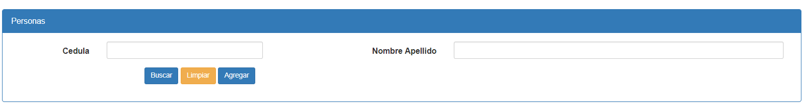

En el SubMenu Personas permite realizar las operaciones de Buscar, Limpiar, Agregar. Ademas se puede realizar la busqueda por Cedula o Nombre Apellido.

Created with the Personal Edition of HelpNDoc: Free Kindle producer